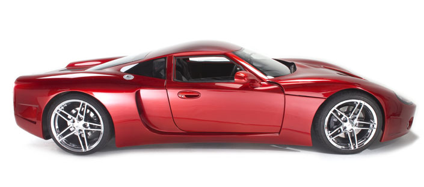

Tap Out
·
API
Mail
Gem
Code
Tap Out

Tap Out is a TAP-Y/J harness written in Ruby.
more...
TAP-Y/J is YAML or JSON document streaming specification for test results.
more...
Copyright 2010 © Thomas Sawyer, Rubyworks